SubCat watches your GitHub Actions runs and hunts down flaky tests — so you can stay in flow. Run any workflow 5×, 10×, N× with one click.
Passes locally, passes in review, then fails in main. Nobody can reproduce it.
Engineers watching CI, clicking Re-run, pasting URLs in Slack. Hours lost every week.
BuildPulse requires cloud hooks, org admin access, and a budget approval.
Most tools say "it failed" — not which test, not how often, not why.
Set any run to execute N times automatically. Each iteration is tracked, logged, and compared. Flaky tests expose themselves when you run them enough.
No webhooks. No org admin. No SaaS. Paste a URL. Set a repeat count.
Paste a GitHub Actions run URL. Get a native macOS notification when it finishes. No tab watching, no refresh loops.
Every run, every iteration — logged with status, duration, and failed test names. Persists across app restarts.
Paste a PR URL and SubCat resolves the workflows automatically. Pick which run to watch from a list of your open PRs.
After every repeat run, SubCat exports a structured .md report with a table of results, clickable run links, and per-iteration failed test names. Drop it in a PR comment or your team's wiki.
No extra tooling. No parsing. One click.
SubCat is MIT licensed and built in the open. No tracking, no telemetry, no accounts. Your GitHub token never leaves your machine — it's encrypted with macOS safeStorage. Read the code, fork it, improve it.
Sign in via OAuth Device Flow — no config files. Token encrypted with macOS safeStorage.
Paste a GitHub Actions run or PR URL. Set a repeat count — ×1 to watch, ×10 to hunt flakes.
SubCat polls every 15s, triggers reruns, and surfaces which tests failed. Native notification when done.
SubCat ships fast. Here's what's coming.
Paste a valid GitHub Actions URL and SubCat starts watching immediately — no extra click required.
Re-trigger only the failed jobs instead of the full workflow. Faster flake confirmation, less CI spend.
Continuous watch mode — keep re-running a workflow until you manually stop it. Essential for overnight flake hunts.
SubCat automatically detects your open PRs and surfaces their latest runs without any URL pasting.
Move from OAuth App (full repo scope) to GitHub App for granular, minimal permissions.
SubCat is Electron — cross-platform is possible. Investigating demand before committing to distribution.

SubCat runs quietly, watching your CI runs in real time. No browser tabs, no constant refreshing. Get a native macOS notification the moment something needs your attention.
SubCat is MIT licensed and will always be free. If it saved you hours of debugging or helped you ship with more confidence, consider buying us a coffee — it keeps the late nights going and the features coming.
Signed · Notarized · Auto-updating · Apple Silicon